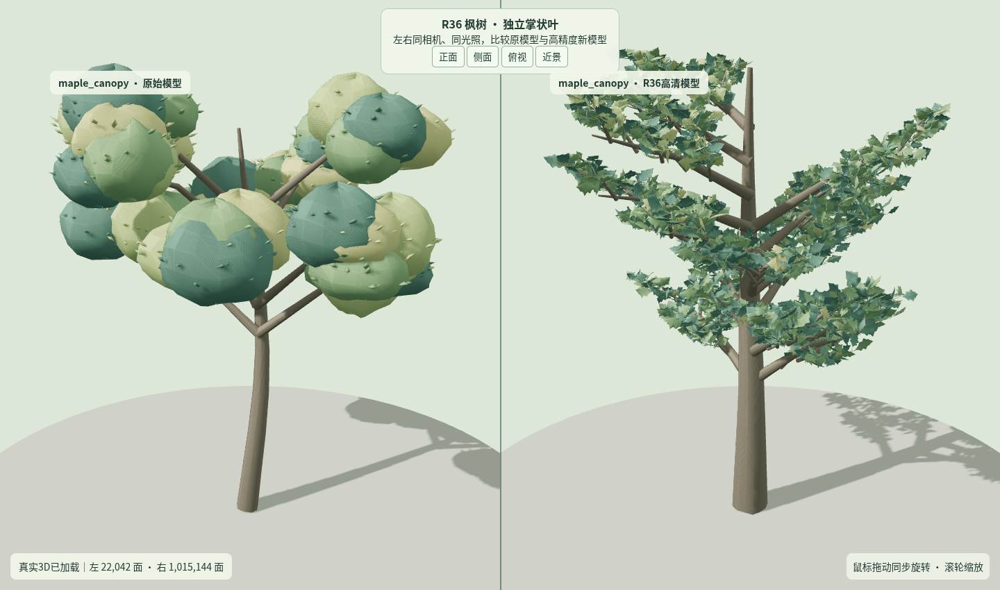
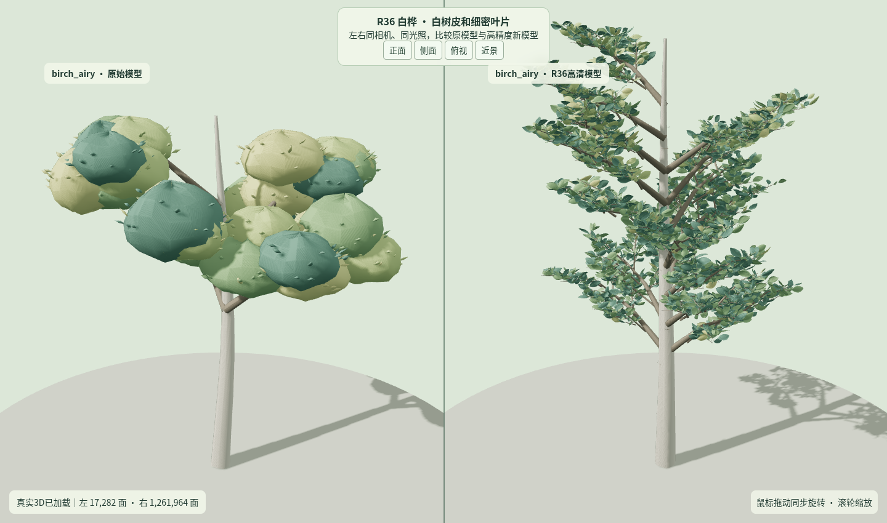
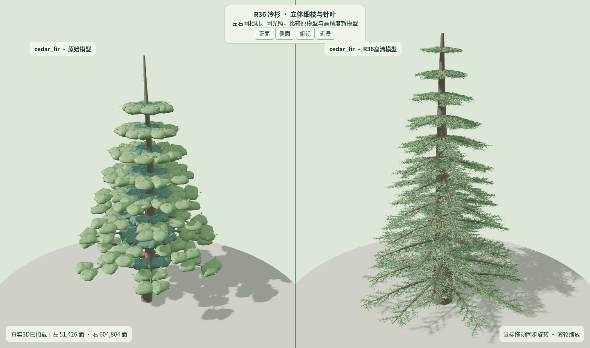
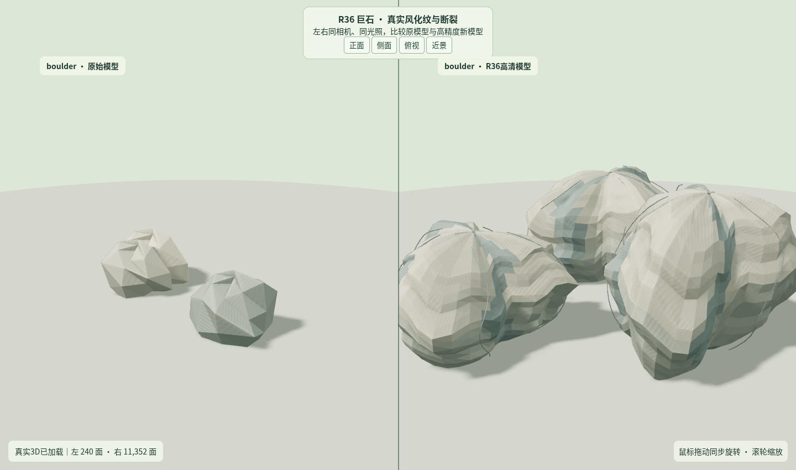
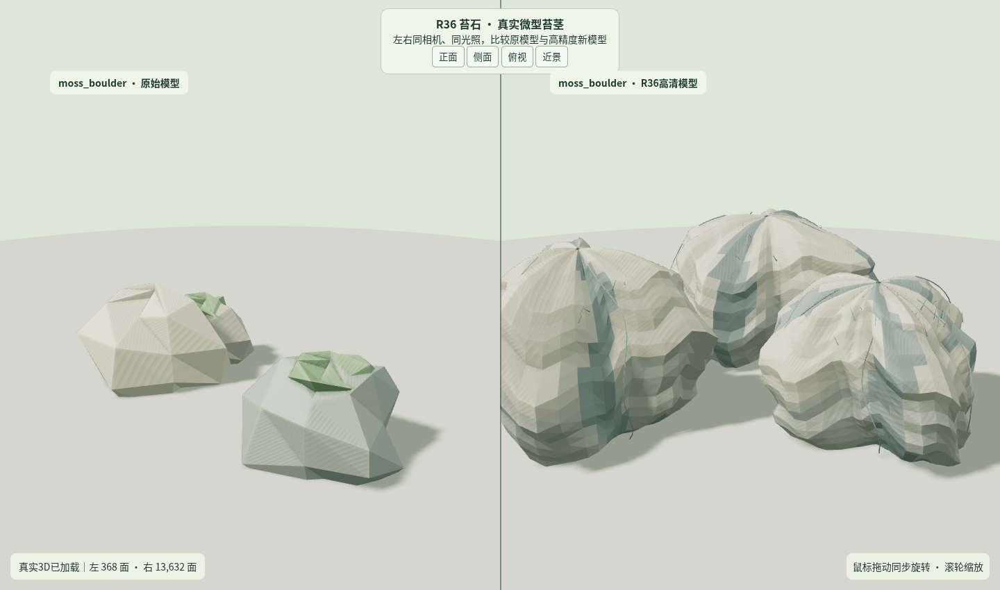
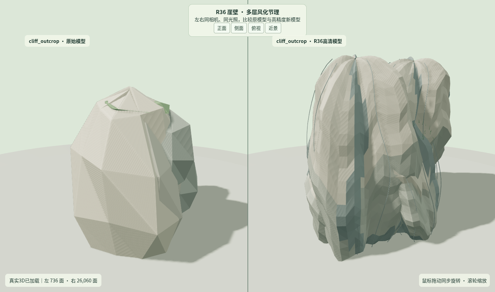
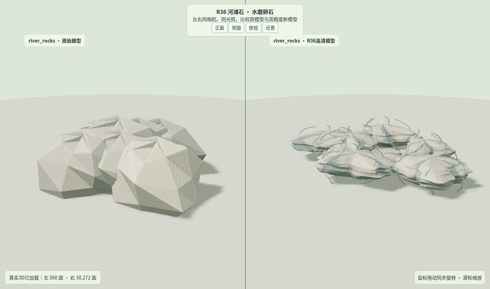
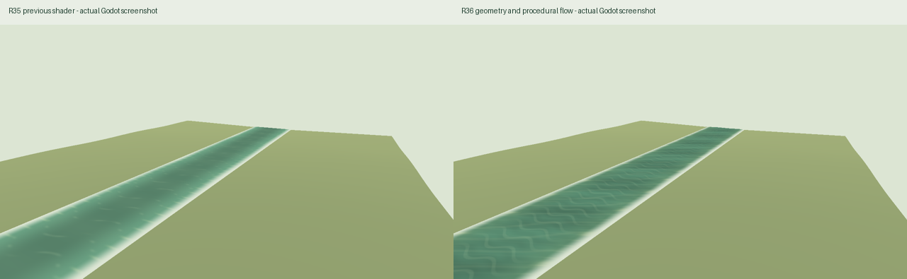

01 / 其他树种
独立叶片、真实枝梢、无球形叶团




02 / 石头与地貌
真三维风化表面、断裂节理、苔茎







03 / 河流与程序化水面
Godot 4.7.2 真实渲染
在保持原河道路径不变的基础上，将河面网格从 2,400 提升到 14,400 三角面，加入三层真实顶点波动、流向细纹和岸边泡沫。这里是实机渲染截图，不是浏览器三维试玩；水体与岩石接触的艺术效果仍在精修。